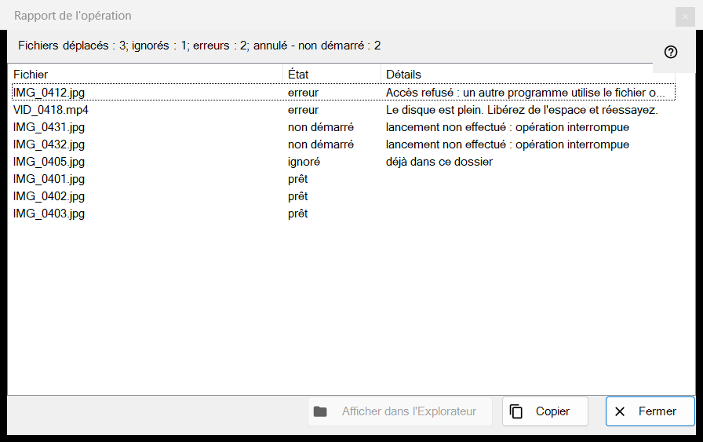
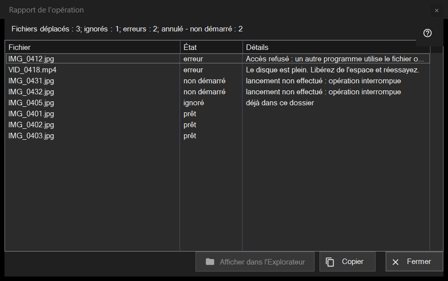

Rapport de l'opération
Objectif
Énumère ce qui s'est passé pour chaque fichier de la dernière opération groupée (déplacement, copie, suppression ou annulation) et pourquoi quelque chose a été ignoré ou a échoué. La fenêtre ne s'ouvre jamais d'elle-même : cliquez sur la ligne du rapport au bas du panneau de miniatures (F3) après une exécution. Si l'exécution n'a pas été propre, la ligne se termine par «cliquez pour voir les détails».


Dans cet ordre
- Lancez une opération sur plusieurs fichiers dans le panneau de miniatures.
- Lisez la ligne de synthèse au bas du panneau.
- Cliquez sur la ligne pour ouvrir cette fenêtre.
- Regardez le haut de la liste : les échecs viennent en premier.
- Sélectionnez des lignes, puis utilisez «Copier» pour prendre leurs chemins ou «Afficher dans l'Explorateur de fichiers» pour retrouver un fichier.
Les éléments
La ligne de synthèse
La ligne commence par le résultat : «Fichiers déplacés : 5», «Fichiers copiés : 5», «Fichiers supprimés : 5», «Fichiers restaurés : 5» ou «Opérations terminées : 5». D'autres parties, chacune avec son nombre, n'apparaissent que lorsque le nombre n'est pas nul : «ignorés», «erreurs», «opérations sans annulation», «supprimés définitivement, restauration impossible» et, lorsque l'exécution s'arrête plus tôt, «interrompu, pas de connexion au dossier - non démarré» (trois connexions échouées de suite l'arrêtent) ou «annulé - non démarré».
La liste
Colonnes : Fichier, État et Détails. Les pires lignes viennent en premier : échouées, puis non démarrées, puis ignorées, puis terminées ; au sein d'un groupe, les fichiers gardent l'ordre de l'exécution. L'info-bulle d'une ligne montre le chemin complet. Les détails donnent une raison claire pour un échec, le dossier de destination pour un fichier terminé, «enregistré sous» et le nouveau nom lorsque l'ancien était pris, et «Supprimé définitivement - annulation indisponible» pour une suppression qui a contourné la Corbeille.
États et raisons d'un saut
États : «prêt», «Erreur», «ignoré», «non démarré». Un fichier ignoré dit pourquoi : «déjà dans ce dossier», «le fichier n'est plus sur le disque», «les fichiers dans l'archive ne sont pas modifiés», «le même nom existe déjà parmi les fichiers sélectionnés», «la ressource est en lecture seule», «c'est le même fichier» ou «nom déjà pris dans le dossier de destination». Un fichier non démarré indique «lancement non effectué : opération interrompue».
Afficher dans l'Explorateur de fichiers, Copier, Fermer
«Afficher dans l'Explorateur de fichiers» est actif lorsqu'une ligne est sélectionnée ; il ouvre une fenêtre de dossier avec le premier fichier sélectionné mis en évidence, ou le dossier si le fichier a été déplacé. «Copier» (aussi Ctrl+C) place dans le presse-papiers les chemins complets des lignes sélectionnées, un par ligne, ou de toutes les lignes si aucune n'est sélectionnée : un moyen rapide de transmettre la liste des fichiers problématiques. «Fermer» termine le rapport.